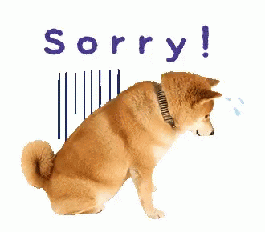

Tindog was created by Run Qi (Jack) Li as a part of the solo projects for Module 7 of Next Level JavaScript of the Scrimba Frontend Developer course.
The additional features of this app was inspired by Daniel Beck Rose, who is also a Scrimba student; You can check his Tindog or reach him at .
Others dog profiles are, unfortunately, ficticious but are all created with ❤️ ️. In the future, Jack hopes to own a Shiba.
Jack has a porfolio website (work in progress), and a LinkedIn profile. If you want to get in touch with him, just Email him or DM him on DM Twitter.
